The alarm is a prospective rolling-burden rule on behavioural topic probabilities from LDA / DCABP.
At each decision time (t):
Only decisions with enough history (full W) and enough follow-up to score the label (or a known PD time) are kept. Those eligible ((patient, t)) pairs are the decision points.
| Parameter | Role | Typical choices |
|---|---|---|
| W (lookback) | How much past burden is summarised at (t) | 60 / 90 / 120 days (≈ 2 / 3 / 4 months) |
| H (horizon) | How far ahead PD counts as a hit | 90 / 120 / 180 days (≈ 3 / 4 / 6 months) |
| Granularity | How often decisions are made and how LDA is built | daily, weekly, biweekly, monthly |
| Score family | How pUF / burden are constructed | sampled vs collapsed (below) |
| θ (threshold) | Alarm cutoff on the burden scale | Youden-optimal, or a fixed operating point (e.g. ~1.61 on monthly sum scale) |
| Event / censor time | Clock used to stop landmarks and label PD | clinical follow-up days (Obs_time) or eB2-aligned event time |
| Family | Idea |
|---|---|
| Sampled | Daily sliding LDA (30-day window) → daily pUF; weekly / biweekly / monthly only change when you decide (same underlying daily signal). Burden = rolling mean over the last W days. |
| Collapsed | One LDA per non-overlapping block (7 / 14 / 30 d) → block pUF; burden = rolling mean over the last round(W/block) blocks. |
Collapsed block pUF is not the mean of daily pUF inside the block: each family is its own LDA construction.
On the monthly scale, month (m) is placed at day (t = m \times 30). A landmark is kept only if (t) is strictly before the event/censor time. Burden is the sum of pUF over the last W months (so thresholds are on a sum scale, ~1.61, not the mean scale ~0.5 used elsewhere).
We fix a main operating region and then sweep the knobs above:
Obs_time as event/censor clock, Youden / fixed θ ≈ 1.61. Outputs live under results/alarm/ (tables/, figures/). Primary monthly landmarks: tables/decision_points_W3_H4.csv.
Score = sum of pUF over W months; θ ≈ 1.61. Cutoff: month × 30 < Obs_time.
| Metric | Value |
|---|---|
| ROC-AUC | 0.704 |
| Sens / Spec (θ≈1.61) | 0.704 / 0.626 |
| PPV / NPV | 0.259 / 0.919 |
| TP / FN / FP / TN | 112 / 47 / 320 / 536 |
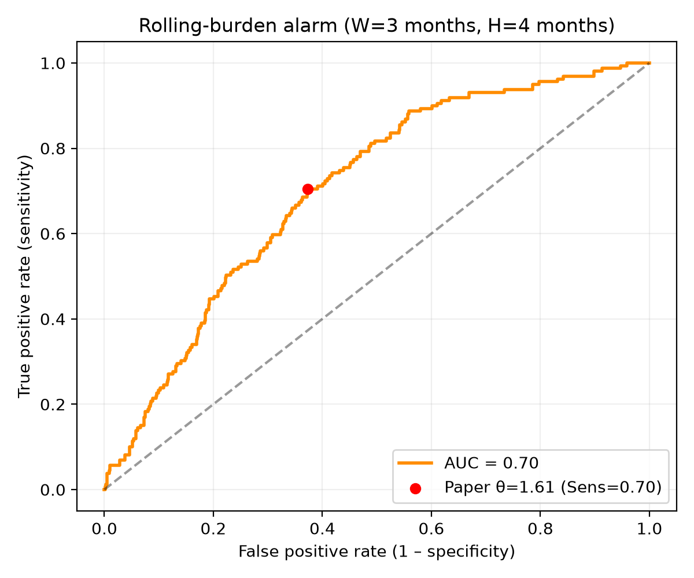
Operating point = Youden threshold per row.
For monthly collapsed, θ (~1.61) is on the sum scale; others use the mean scale (~0.5).
| Granularity | n | AUC | Sens | Spec | PPV | NPV |
|---|---|---|---|---|---|---|
| daily (sampled) | 36279 | 0.686 | 0.644 | 0.647 | 0.243 | 0.912 |
| weekly sampled | 5231 | 0.686 | 0.648 | 0.647 | 0.243 | 0.913 |
| biweekly sampled | 2649 | 0.683 | 0.678 | 0.614 | 0.233 | 0.917 |
| monthly sampled | 1277 | 0.681 | 0.829 | 0.476 | 0.213 | 0.942 |
| weekly collapsed ★ | 4115 | 0.707 | 0.751 | 0.591 | 0.251 | 0.929 |
| biweekly collapsed | 2118 | 0.697 | 0.714 | 0.603 | 0.260 | 0.915 |
| monthly collapsed (30 d) | 1015 | 0.704 | 0.704 | 0.626 | 0.259 | 0.919 |
Short read
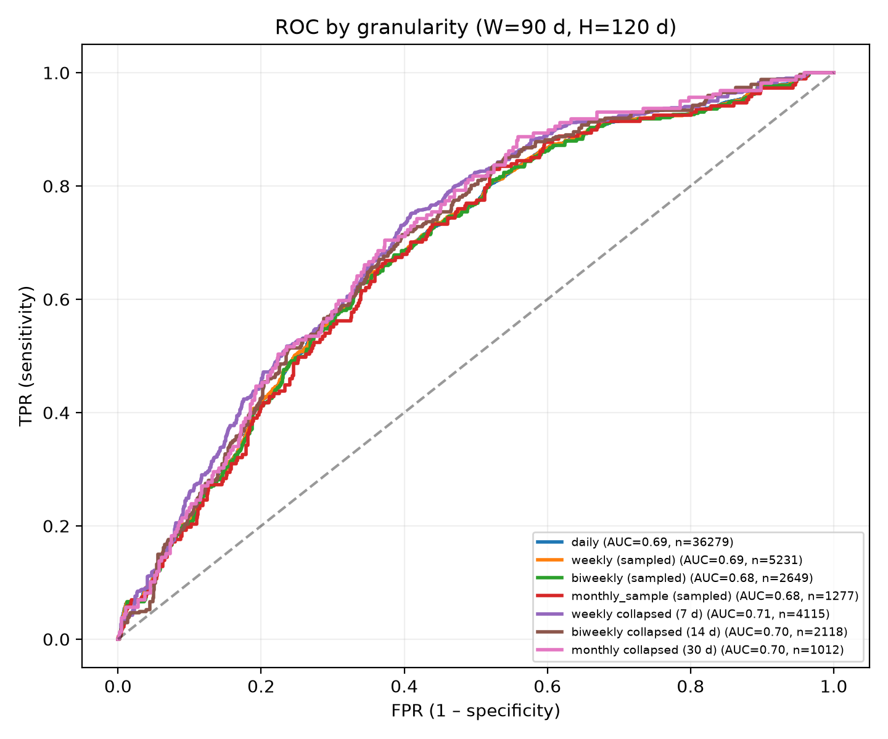
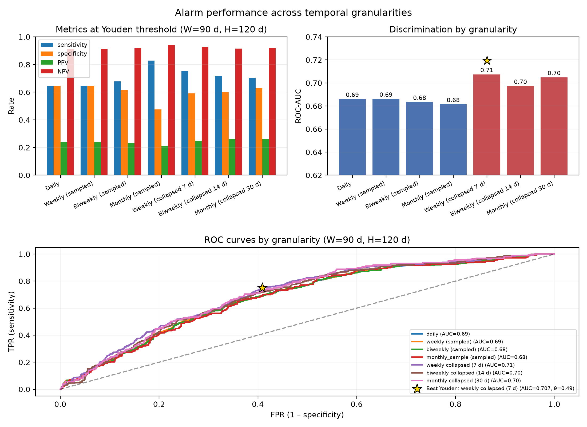
Grid: W ∈ {60, 90, 120} d × H ∈ {90, 120, 180} d.
| H=90 | H=120 | H=180 | |
|---|---|---|---|
| Daily W=60/90/120 | 0.662 / 0.672 / 0.681 | 0.675 / 0.686 / 0.694 | 0.706 / 0.713 / 0.716 |
| Weekly collapsed ★ | 0.673 / 0.697 / 0.709 | 0.688 / 0.707 / 0.719 | 0.717 / 0.732 / 0.740 |
| Monthly collapsed | 0.668 / 0.688 / 0.703 | 0.681 / 0.704 / 0.717 | 0.713 / 0.731 / 0.738 |
Read
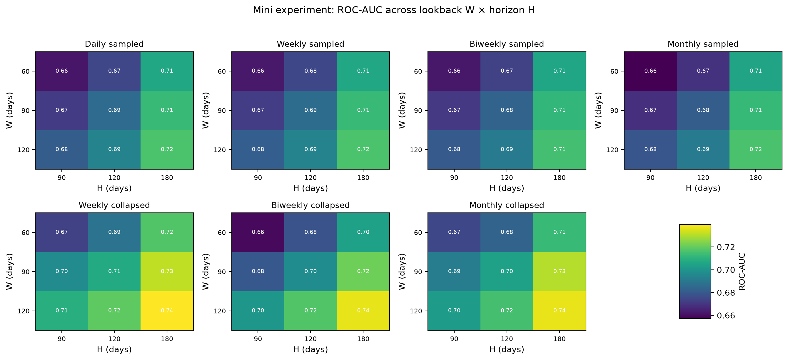
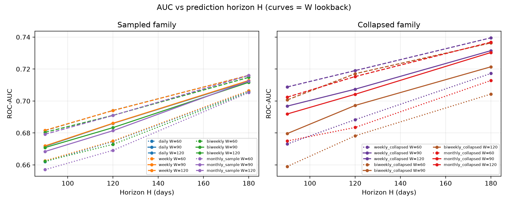
Table: tables/wh_grid_auc.csv
Patients: 62004, 23003, 31002, 41006.
| ID | Profile | Notes |
|---|---|---|
| 62004 | PD (day 317) | 1st alarm ~month 7 (lead before PD) |
| 23003 | PD (day 206) | High burden from the start; early alarm |
| 31002 | No PD | Late alarm (~month 21) with no event in follow-up |
| 41006 | No PD | Below threshold; no alarm |
W=3 months, H=4 months, θ=1.61 (mean-scale θ/W≈0.54).
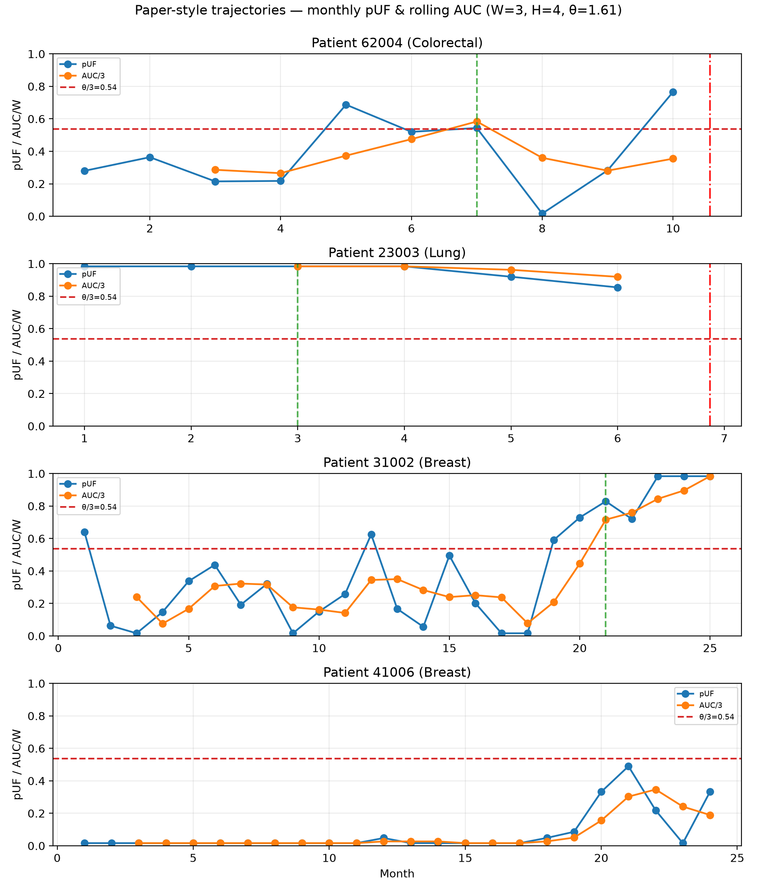
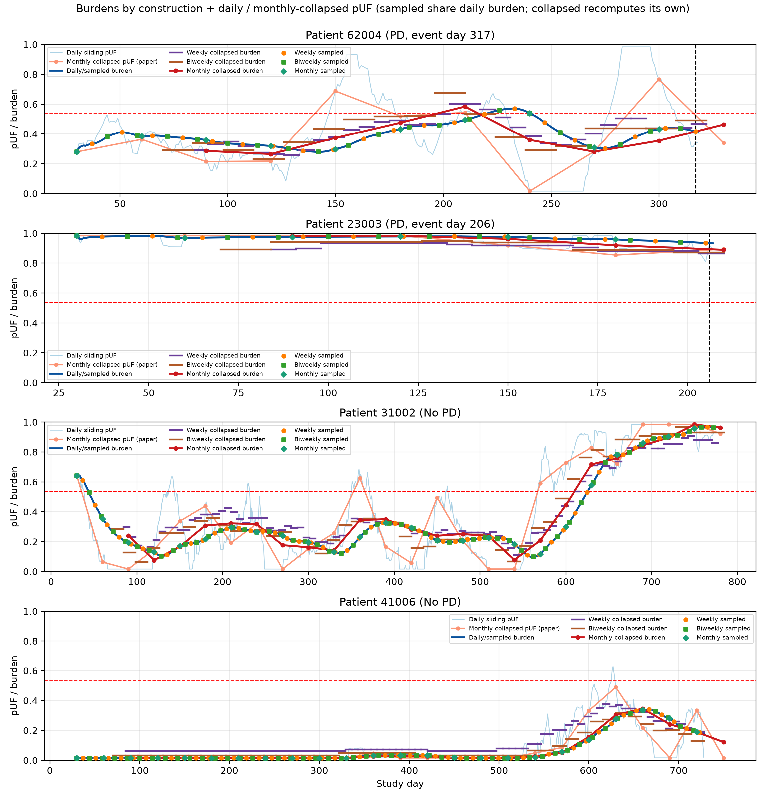
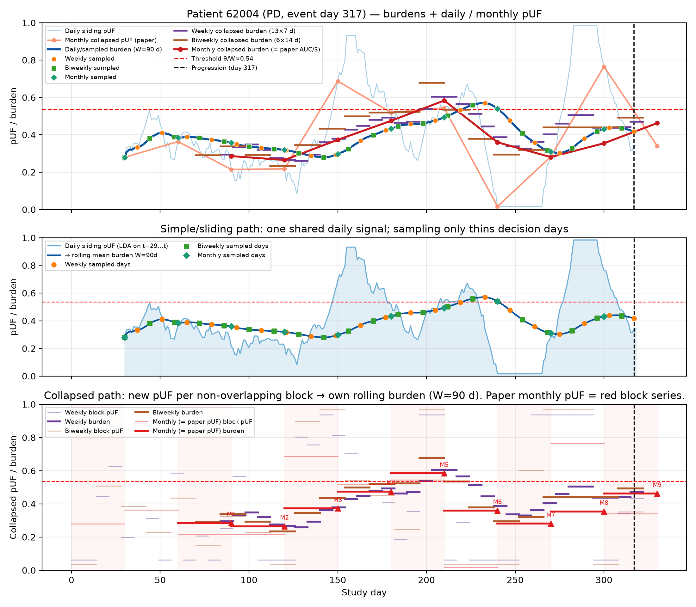
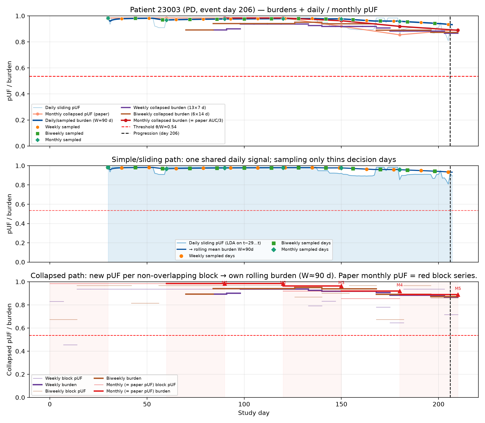
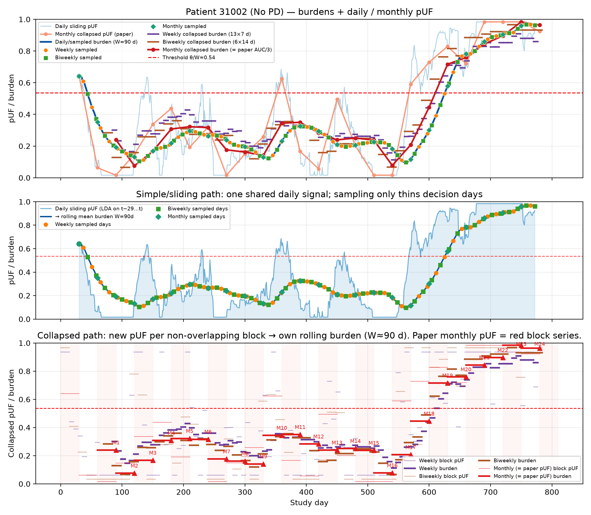
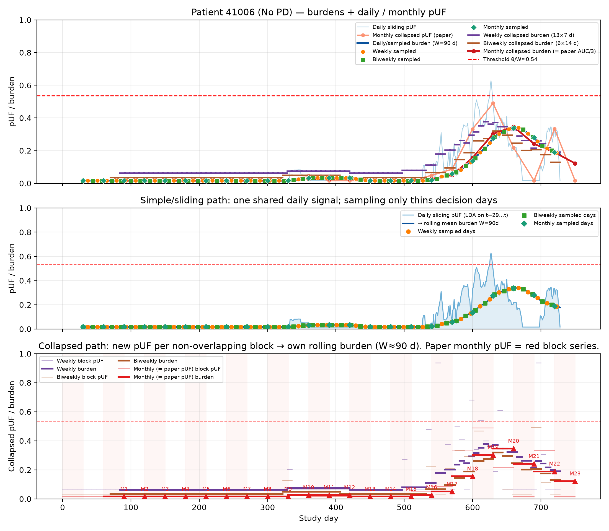
# Monthly baseline + ROC sweep
.venv/bin/python scripts/03_analysis/alarm/run_granularity_sweep.py --monthly-only
.venv/bin/python scripts/03_analysis/alarm/run_granularity_sweep.py --skip-lda
# W×H mini-experiment (+ heatmaps)
.venv/bin/python scripts/03_analysis/alarm/analyze_missingness_and_wh_grid.py
# Monthly trajectories
.venv/bin/python scripts/03_analysis/alarm/plot_patient_trajectories.py \
--patients 62004,23003,31002,41006
# Sampled vs collapsed trajectories
.venv/bin/python scripts/03_analysis/alarm/plot_granularity_trajectories.py \
--patients 62004,23003,31002,41006 --W 90
File map: README.md.